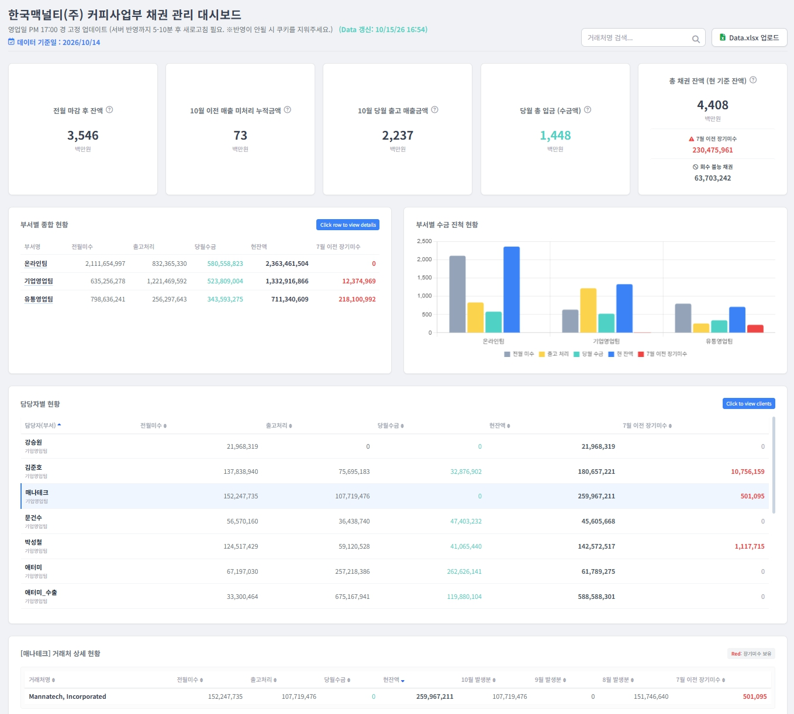
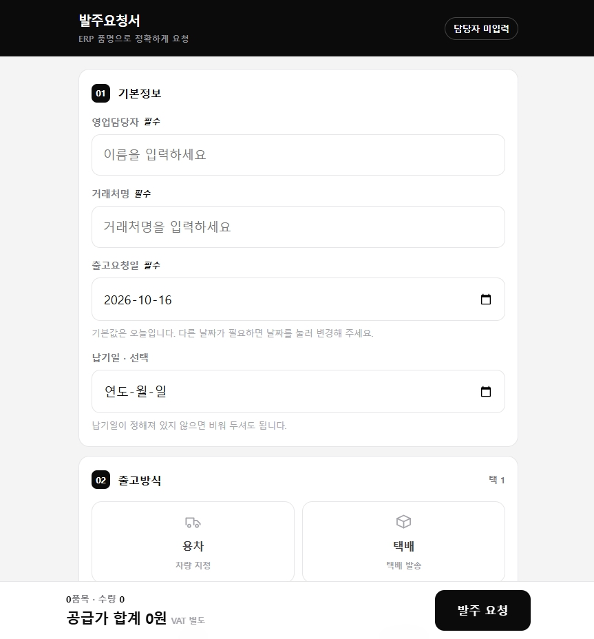

10년간 IT, 가구, 식품 등 다양한 유통 산업군에서 활약해 온 데이터 중심의 하이브리드 영업지원 및 정산 관리 전문가입니다. 단순 루틴 사무 업무를 넘어 유통 채널별 프로세스의 낭비 요소를 적극적으로 파고들어 해결책을 구축하는 데 탁월한 역량을 보유하고 있습니다. 최근 한국맥널티(주)에서 15년 이상 누적되어 방치되어 있던 1억 800만 원 규모의 온라인 거래처 정산 오류 채권을 전수 조사하여 전액 조정 및 완벽 정상화를 이뤄냈습니다. 더불어 실무 현장의 고충을 해소하기 위해 VBA 매크로 프로그램을 자체 설계/개발하여 일일 반복 업무량을 최대 90% 단축시키는 등 비용 절감과 운영 효율성 극대화를 주도적으로 실천하는 인재입니다.
* 사업 초기(2010년)부터 누적된 다년치 오류 데이터를 유통 채널별 전수 분석하여 정상화
성과 지표: 총 1억 800만 원 누적 채권 매칭 완료 및 담당 이후 현재까지 정산 오류 Zero화 달성
* 2025년 12월 전담 이후 상시 실사 체계를 안착시켜 미진행 채널의 재고 투명성 확보
성과 지표: 2026년 평균 재고 약 2억 4,900만 원 관리 기준, **총 재고 조정 금액 단 175원(오차율 0.000%)** 달성. 대형 행사 시 발생한 오출고분을 신속 추적 및 회수 진행하여 5월 내 수불 정합성 완벽 반영 완결.
* 매일 수기로 수십 분~수 시간씩 소요되던 고부하 프로세스를 자동화 템플릿 제작으로 구조 개선
더존, 영림원 ERP 연동 및 공용 문서 완벽 제어
수식 활용, 비정형 데이터 세분화 및 시각화 자동화
미팅 자료 및 상품/회사 소개서 제작 가능
상품 상세기술서 직접 제작 및 마케팅 소스 편집
기본적인 수정 및 컷 편집, 자막 작업 가능
업무 프로세스 구축 가이드라인 및 서식 작성 최적화
파트너사 입점 및 관리, 유관 부서 협업 조율
커뮤니티 카페 활동 유도 및 블로그 최적화 지원
사내 데스크탑 하드웨어 점검 및 조립 트러블슈팅

이미지 불러오기 실패 (20261016-1.jpg)개선 배경: 외부 활동으로 ERP 접속이 어려운 오프라인 영업사원들의 메신저/이미지 발주로 인한 출고 오류 예방 및 지원/물류 부서 업무 피로도 최소화

이미지 불러오기 실패 (20261016-2.jpg)
직장인 라이프 속 제 별명은 '숙피티'였습니다. 주어진 업무를 처리하는 것에 그치지 않고,
이후 해당 포지션을 맡을 동료를 위해 업무 가이드를 수립하고 프로세스를 자산화해 나가기 때문입니다.
영업 및 MD 직무를 하면서 모든 유관 부서와의 허브 역할을 수행하였습니다. 제품의 상품성이 완벽하더라도 완벽한 패키지와 기술서를 위해 디자인 팀과의 정밀한 협업이 필요하고, 런칭 시 타겟 세분화를 위해 마케팅 팀과의 전략 수립이 필요합니다.
나아가 고객 접점인 CS 팀의 피드백을 수집해 물류 및 재무 팀과 개선점을 도출해 나가는 것까지 포괄적으로 책임져왔습니다.
부서 이기주의를 허물고 전사적 관점에서 개선점을 찾아 기여하는 든든한 챗GPT형 인재가 되겠습니다.
# 소심한 삼남매의 둘째에서 외향적 리더로 엄격하고 바른 성정을 강조하신 부모님 밑에서 자라 초기에는 말수가 적은 편이었습니다. 그러나 대학 졸업 후 중소기업 인턴십 과정에서 팀원들과 치열하게 소통하고 배려하며 협력하는 가치를 배운 후, 적극적이고 원활한 커뮤니케이션 능력을 갖추게 되었습니다.
# 내 일의 결과가 '숫자'로 증명될 때의 희열 헤어샵 마케팅 컨설팅 및 영상 제작 업무를 수행하며 제 기획의 결과가 매출 상승이라는 '숫자'로 증명되는 것에 강한 만족감과 적성을 발견했습니다. 이후 본격적으로 영업 실무에 뛰어들어 상품 트렌드를 분석하고 데이터 기반 매출 증대 전략을 수립하는 커리어를 구축해 왔습니다. 이후 기업 규모를 넓혀가며 라이브 방송, 브랜드 마케팅, 전사 채권 정산까지 아우르는 전문가로 레벨업해 왔습니다.
때로는 타인을 향한 높은 배려심이 단점으로 여겨질 수도 있으나, 이를 긍정적인 협업 시너지로 승화시키고 있습니다. 상대방과의 신뢰 관계를 굳건히 유지하면서도, 공과 사를 명확히 구별하여 본인에게 주어진 실무 원칙과 정산 가이드라인은 철저하고 끈기 있게 완수하는 메커니즘을 완성해 가고 있습니다.